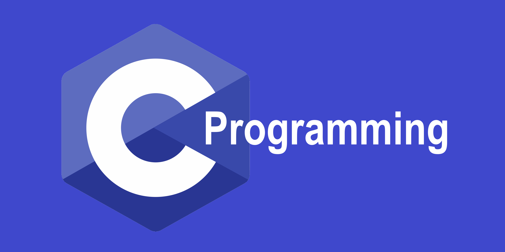
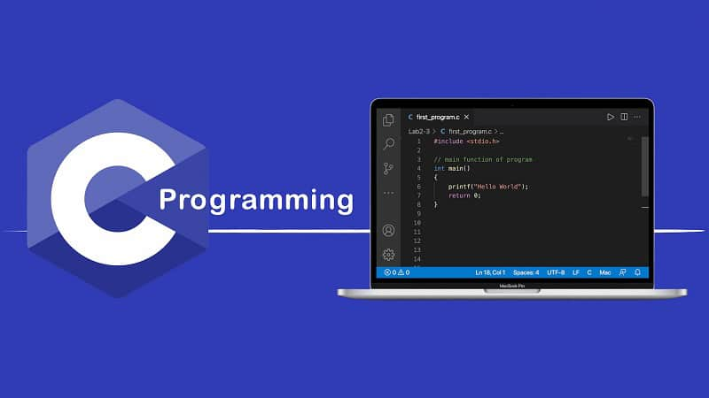

C dili nedir?

C Dili Nedir?
AT&T Bell laboratuvarında geliştirilen dil, Ken Thompson ve Dennis Ritchie tarafından UNIX İşletim Sistemi' ni geliştirebilmek amacıyla B dilinden türetilmiş yapısal bir programlama dilidir.
C programlama dili, mikrodenetleyicilerin programlamasında, masaüstü programlarının geliştirilmesinde, işletim sistemi üretilmesinde, gömülü sistemlerde ve aklınıza gelebilecek hemen her yerde kullanılabilen bir dildir.
Makine diline yakın olması ve düşük seviyeli bir dile göre daha kolay olması sebebiyle ilk başta öğrenilmesi diğer programlama dillerine geçerken büyük kolaylık sağlamaktadır.
Düşük seviye dil tanımı negatif yönlerinin fazla olduğunu çağrıştırmamalıdır.
Düşük seviyeli tanımı makine diline yani 1 ve 0'lara dönüştürmek, daha doğrusu bilgisayarın anlayacağı dile daha yakın olması diyebiliriz.
Bu konuda biraz daha detay vermek gerekiyor.
Düşük seviyeli programlama dili
Bİlgisayarın ortaya çıktığı sürelerde Makine ve Assembly dilleri kullanılırdı. Bunlar ikili sayı sistemine göre kodlanmak zorunda olduğu için yazılan programda her şeyi detaylı açıklamak gerekir. Kullanımı zor olan bu diller düşük seviyeli diller olarak adlandırılır.
Yüksek seviyeli programlama dili
Bu dillerin öğrenilmesi ve yazılması daha kolaydır. Bu dillerde yazılan programlar hem zamandan kazandırır hem de daha iyi sonuçlar almanızı sağlar.
Çok yüksek seviyeli programlama dili
Bu diller kullanıcıların bilgisayara ne yapılacağını ifade etmesine olanak vermesidir. C programlama dili düşük seviyeli dillere göre daha anlaşılır, yüksek seviyelilere göre daha esnek bir yapısı olduğu için orta seviyeli diller arasında yer alır. Bu özelliği sayesinde her alanda kullanılabilir. Lakin programlar donanımlar hesaba katılarak yazılmalıdır. Çünkü daha az fonksiyon ve kütüphane barındırmaktadır.

C Dilinde Programlama Kavramları
- Fonksiyon: Fonksiyon, program çalışırken bilgisayarın yapması gereken işleri temsil eden kod bloğudur. Programımız çeşitli fonksiyonları tanımlar ve fonksiyonları diğer fonksiyonların içerisinde çalıştırabilir. Fonksiyonlar birbirleri ile ve kütüphanelerle iletişim halinde çalışırlar.
- Değişkenler: Bir program çalıştırıldığında veya çalıştırılmadan önce, fonksiyon içerisinde kullanılacak olan değerleri ve programın çalışması sonucu ortaya çıkacak olan değerleri belli bir değişkene atamak programcıya esneklik ve kolaylık sağlar.
- Veri Türleri: Program çalıştırıldığında verileri bellekte saklamak ve bu verileri üzerinde işlem yapabilmek için C programlama dilinde tanımlı belli veri türleri vardır. C dilindeki her veri türü, ikili bit veya bayt olarak ölçülen belirli bir boyuta ve bitlerin neyi temsil ettiği hakkında kurallar kümesine sahiptir.
- İşlemler: C dilinde sayı dizileri üzerinde bazı aritmetik işlemler gerçekleştirilebilir. Bu aritmetik işlemler karakter dizileri üzerinden de yapılabilir. Bu gibi işlemler için C dili belli başlı kütüphanelere ve veri türlerine sahiptir.
- Döngüler: Bir programcının yapmak isteyeceği en temel işlerden biri, program çalışırken ortaya çıkan belirli koşullara bağlı olarak bir eylemi birkaç kez tekrarlamaktır. Verilen koşullara göre tekrarlamak için tasarlanmış bir kod bloğuna döngü adı verilir. C dilinde döngüler şu ifadelerle gerçekleştirilir: “While”, “Do-While”, “For”, “If”, “Then”, “Else”, “Switch-Case”…
- Veri Yapıları: Programlamacılar, işlemek için çok fazla veriye sahipse ve bu verileri sıralamaları veya arayıp kullanmaları gerekiyorsa genelde bir tür veri yapısına ihtiyaç duyarlar. Bir veri yapısı, aynı veri tipinde birkaç veri öbeğini temsil etmenin yapılandırılmış bir aracıdır. En yaygın veri yapısı, belirli bir büyüklüğün yalnızca dizinlenmiş bir liste içerisinde kullanılmasını sağlayan “dizi”lerdir.
- Önişlemci İşlemleri: Bazı durumlarda derleyici üzerinde hazırlanan kodu çalıştırmadan önce, kodla alakalı bazı işlemler hakkında talimatlar vermek istenebilir. Önişlemci işlemleri de sabit değerler üzerinde çalışarak verilen komutları yerine getirmeyi amaçlar. Bunu yaparken C kütüphaneleri üzerinden elde ettiği kodları kullanır.
- Donanım geliştirilebilir: Bildiğiniz üzere driverlar (Sürücüler) sistem üzerinde tam yetkiye sahip, ring 0 denilen sistemin merkezinde çalışan sys uzantılı dosyalardır. Bu sayede donanımın tüm gereksinimlerini kodlayabilirsiniz.
- Grafik ve oyun geliştirilebilir: C dili satranç, zıplayan top, okçuluk gibi oyunların yanı sıra yeni çıkan oyunların grafiklerinin geliştirilmesinde de kullanılır.
- Gömülü sistemler kodlanabilir: Akla gelen her alanda, makinenin olduğu her yerde savunma sanayi, otomotiv sektörü, beyaz eşya sektörü vb. C dilini kullanmaktadır.
- Robot kodlanabilir: Arduino, Raspberry Pi gibi mikrodenetleyici kartlarını kullanarak gerekli programlama bilgisiyle istenilen robot yapılabilir.
- İşletim Sistemi oluşturulabilir: Unix-Çekirdeği, Microsoft Windows programları , işletim sistemi uygulamaları ve Android işletim sisteminin büyük bir bölümünün C ile yazılmaktadır.
- Bir programlama dili yazılabilir: C# , Java , Limbo , JavaScript , Perl , UNIX’in C Kabuğu , PHP ve Python , değişken kapasitede C’yi kullanır: Örneğin Python’da C standart kütüphaneler oluşturmak için kullanılırken, C++, Perl ve PHP gibi diğerleri C temelli sözdizimi ve denetim yapıları kullanır.
- Hesaplama Platformları: C, algoritmaları ve veri yapılarını hızla uygular ve programlarda daha hızlı hesaplamaları kolaylaştırır. Bu, MATLAB ve Mathematica gibi daha yüksek derecelerde hesaplama gerektiren uygulamalarda C’yi kullanmayı sağlamıştır.
C Programlama Dili İle Neler Yapılabilir?